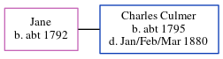

Jane Culmer c1792 -
[ Home ] | [ Calendar ] | [ Surnames Index ] | [ Census Index ] | [ Family History ]Jane, the wife of Charles Culmer (the fifth times great-uncle of Nigel Horne), was born in Westgate, Canterbury, Kent, England c. 17921. In 1851, she was living in Stourmouth, Kent, England1.
Citations
- 1851 England Census Online publication - Provo, UT, USA: The Generations Network, Inc., 2005.Original data - Census Returns of England and Wales, 1851. Kew, Surrey, England: The National Archives of the UK (TNA): Public Record Office (PRO), 1851. Data imaged from the National
Family Tree
Generated by ged2site. Last updated on Jun 11, 2024